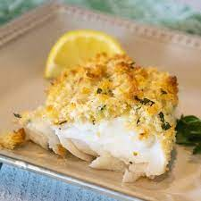

Baked Haddock Recipe

Mom's Baked Haddock
Are you on the hunt for the most delicious and crispy baked haddock? Well, your search ends with this recipe for the best baked haddock you've ever tasted. It's quick, easy, and has all the crispy goodness of fried fish without the mess of deep frying. We promise everyone at your table will love this delectable entree.
Ingredients
- 3/4 Cup Milk
- 2 Teaspoons Salt
- 3/4 Cup Bread Crumbs
- 1/4 Cup Grated Parmesean Cheese
- 4 Haddock Filets
- 1/4 Cup Butter, melted
Instructions
- Preheat oven to 500 degrees F
- In a small bowl, combine the milk and salt. In a separate bowl, mix together the bread crumbs, Parmesan cheese, and thyme.
- Dip the haddock fillets in the milk, then press into the crumb mixture to coat. Place haddock fillets in a glass baking dish, and drizzle with melted butter.
- Bake on the top rack of the preheated oven until the fish flakes easily, about 15 minutes.